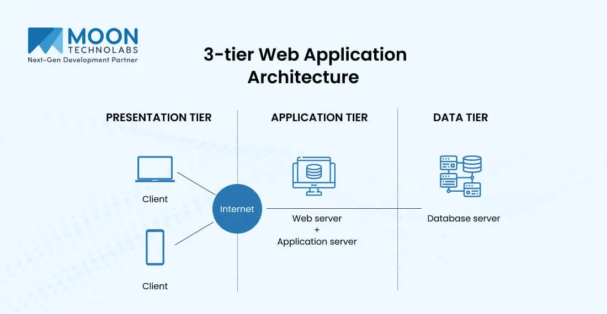

N-Tier Architecture
Category: Web Application Design & Systems
Definition
N-Tier Architecture (also known as multi-tier architecture) is a client–server architecture in which presentation, application processing, and data management functions are physically and logically separated.
The Three Core Tiers
Most web applications use a 3-Tier model as described:
- Presentation Tier (Front-end): The topmost level of the application—the user interface. This is what the user sees in their browser (HTML, CSS, JavaScript).
- Logic/Application Tier (Middleware): The "brain" of the application. It processes commands, makes logical decisions, and performs calculations (e.g., using PHP, Python, or Java).
- Data Tier (Back-end): Where information is stored and retrieved. This typically consists of a database server (e.g., MySQL, PostgreSQL).
Visualizing the Layers

Advantages
Why use N-Tier instead of putting everything on one server?:
- Scalability: You can upgrade the database server without touching the web server.
- Security: The database is hidden behind the logic tier, making it harder for hackers to access sensitive data directly.
- Maintainability: Different teams can work on the front-end and back-end simultaneously without interfering with each other's code.